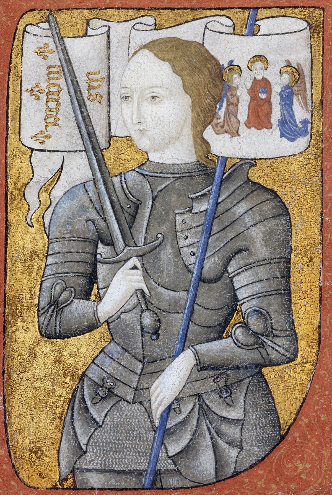

This is a story a girl name Joan of Arc, born in Domrémy in northeast France.In 1428, she requested to be taken to Charles, later claiming that she was sent by the gods to save France from the English. Charles sent Joan, who was about seventeen years old, to the siege of Orléans as a member of a relief force after becoming convinced of her devotion and purity. She then led the French army to a crucial victory at Orléans in 1429 that prevented the English to capture France.
Joan of Arc is considered to be a hero because she has a potential for personal sacrifice, a noble purpose, and the willingness to accept the consequences of fighting for a purpose. She was willing to sacrifice her own life for her country which was on the verge of losing. She was ready to risk her life to save France, and according to Philip Zimbardo and Zeno Franco's concept of heroism, heroism is an act of commitment to a noble purpose and willingness to accept the consequences of fighting for that purpose.